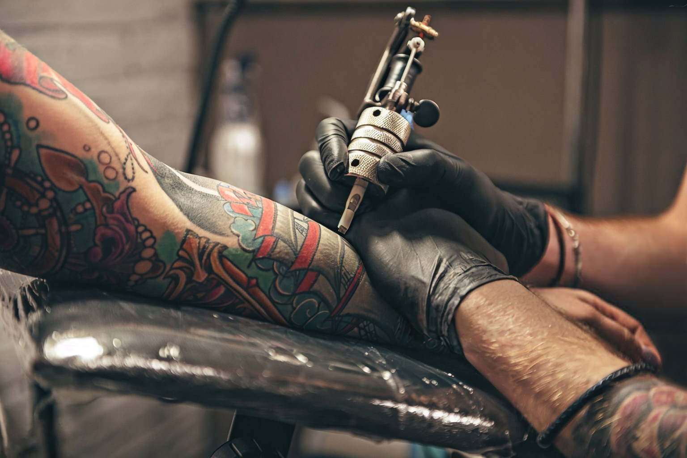
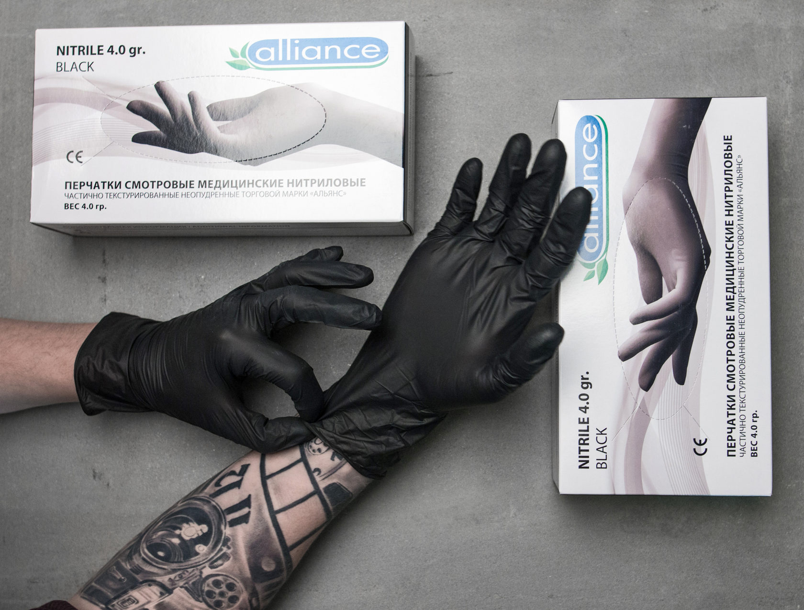

Тату-студия «Омут» это - классический подход к украшению тела. Уже много лет наши мастера создают татуировки, совершенные как по качеству, так и по исполнению.
Наши мастера работают в разных стилях: блэкворке, минимализме, лайнворке, орнаментале, дотворке, трайбле, полинезии, олдскуле или акварели.
Обеспечение безопасности - вот с чего начинается сеанс. Все используемые инструменты стерильны. Мы строго соблюдаем правила дезинфекции и санитарные нормы.
Студия располагается по адресу г. Москва, ул. Бесстыдниковская, дом 8, строение 1. Ждем вас!
Тату-студия «Омут», © 2006 - 2024
г. Москва, ул. Бесстыдниковская, дом 8, строение 1
ООО «ОМУТ ТАТУ»